San Subra—Journal de quartier
Projet de diplôme
Format ouvert—A2 / imprimé sur papier washi
Toulouse—Juin 2017
Projet en cours de développement avec l’association « Saint Cyprien Quartier Libre »
Étude menée autour de l’appropriation du milieu de vie. C’est à travers divers ouvrages traitant notamment de la notion
de culture dans les sciences sociales, de l’habitat participatif ou encore l’urbanisme des modèles que le projet a prit tout son sens.
Cette production présente une dualité entre la volonté de créer différentes formes d’échanges et d’usages et un questionnement
autour du comportement voire d’un ensemble de gestes et d’habitudes conditionnés par un espace donné. Le projet consiste
en la mise en place d’outils permettant aux habitants de s’approprier ne serait-ce que de façon minime, leur quartier. L’outil développé
ici est un journal bimensuel qui apporte différents types d’informations et qui ne répond pas aux codes des journaux municipaux existants.
Cette expérience vise à revaloriser l’échelle humaine du quartier et à permettre aux habitants d’être les principaux acteurs de leur quartier,
c’est une invitation à participer. Ce projet porte un intérêt à l’expérience dans le temps et l’espace. Les trames sont les éléments qui vont
évoluer au fil des éditions. Elles sont le résultat d’un processus d’extraction effectué via des cartes postales du quartier datant,
pour les premières, du début 1900. Certaines se basent sur les flux de population, les plans, les dénivelés, les niveaux,
ou encore l’architecture.
Ce projet s’inscrit dans une démarche qui entraine aujourd’hui encore d’autres projets, notamment une plateforme interactive
d’échanges, et incite à la participation et à l’engagement des créateurs dans l’espace social.
Étude menée autour de l’appropriation du milieu de vie. C’est à travers divers ouvrages traitant notamment de la notion
de culture dans les sciences sociales, de l’habitat participatif ou encore l’urbanisme des modèles que le projet a prit tout son sens.
Cette production présente une dualité entre la volonté de créer différentes formes d’échanges et d’usages et un questionnement
autour du comportement voire d’un ensemble de gestes et d’habitudes conditionnés par un espace donné. Le projet consiste
en la mise en place d’outils permettant aux habitants de s’approprier ne serait-ce que de façon minime, leur quartier. L’outil développé
ici est un journal bimensuel qui apporte différents types d’informations et qui ne répond pas aux codes des journaux municipaux existants.
Cette expérience vise à revaloriser l’échelle humaine du quartier et à permettre aux habitants d’être les principaux acteurs de leur quartier,
c’est une invitation à participer. Ce projet porte un intérêt à l’expérience dans le temps et l’espace. Les trames sont les éléments qui vont
évoluer au fil des éditions. Elles sont le résultat d’un processus d’extraction effectué via des cartes postales du quartier datant,
pour les premières, du début 1900. Certaines se basent sur les flux de population, les plans, les dénivelés, les niveaux,
ou encore l’architecture.
Ce projet s’inscrit dans une démarche qui entraine aujourd’hui encore d’autres projets, notamment une plateforme interactive
d’échanges, et incite à la participation et à l’engagement des créateurs dans l’espace social.
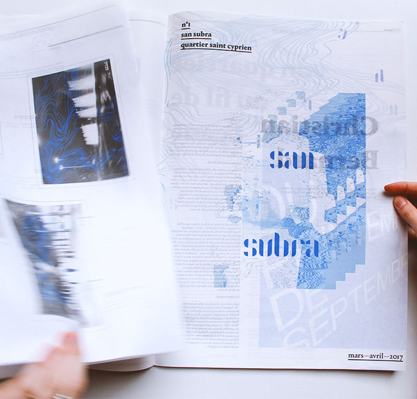

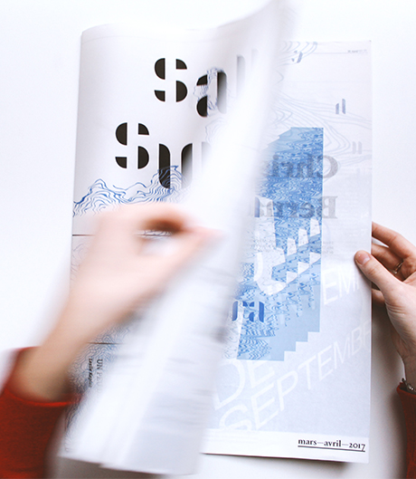
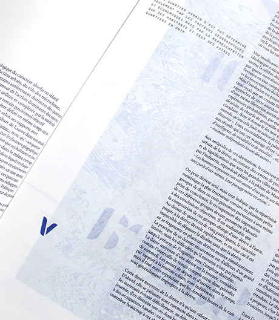
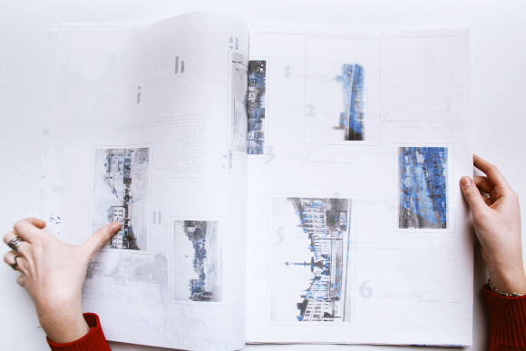
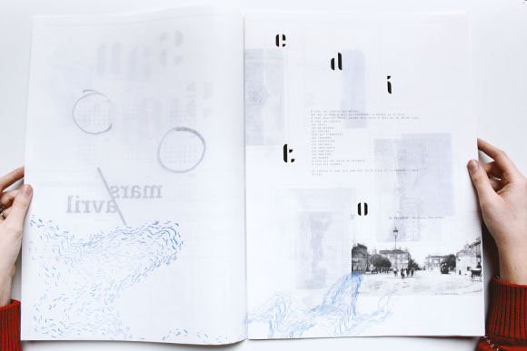
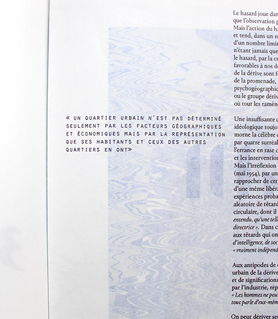
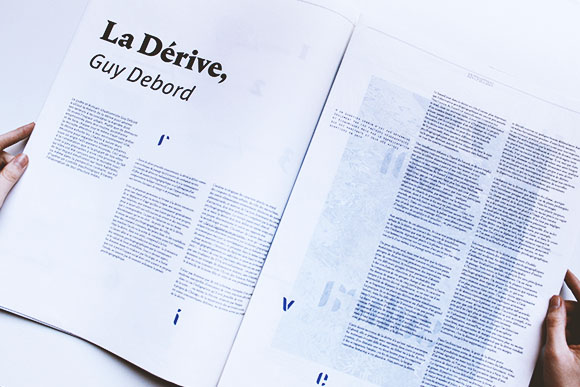
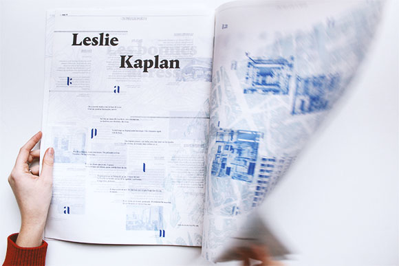
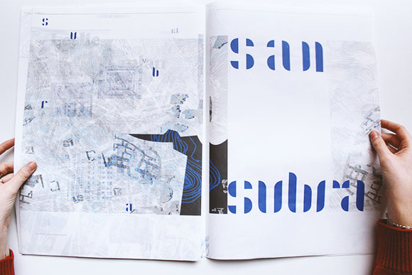
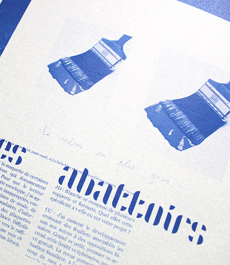
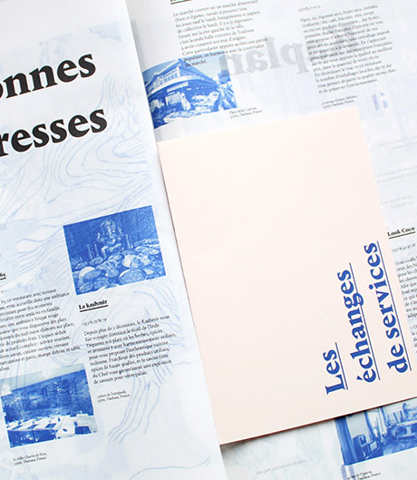